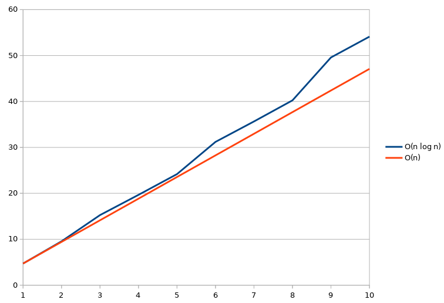

Lazy priority heap
Nota: por brevedad y en general, cualquier afirmación en este blog
@Jose_A_Alonso sugirió enumerar todas las potencias perfectas de la forma mk para todo m,k > 1.
Dicha enumeración puede resolverse perezosamente en Haskell como:
potenciasPerfectas :: [Integer]
potenciasPerfectas = nubOrd $ s [[m^k | k <-[2..]] | m <-[2..]]
where s ((x:xs):xss) = x: s (insert xs xss)Dicha estrategia es muy común en este tipo de problemas: tenemos una lista infinita de listas infinitas a1, a2, … tales que a1 <= a2 y a2 <= a3 y … y entonces vamos tomando el primer elemento de la primera lista moviendo lo que queda de esa lista a su posición para mantener el orden.
Al ser lazy, para recuperar el elemento n se requiere espacio O(n) (porque como mucho habremos accedido a n listas y cada lista sólo expande su primer elemento para poder ser ordenadas), sin embargo el tiempo es O(n2) al tener que insertar linealmente la lista en cabecera.
Así, ¿cómo podríamos insertar eficientemente la lista entre un número no determinado de listas?, habrá inserciones que deberían realizarse sobre listas aún no evaluadas. Supongamos que hemos evaluado las listas hasta la K-ésima, entonces, quizás haya que insertar la cola de a1 en K+i:
a1 a2 a3 ... aK | aK+1 aK+2 ...
^ ^
| |
última evaluada quizás aquíUna solución es usar una cola de prioridad sabiendo que: la lista aK+1 no será evaluada hasta que la lista aK sea reinsertada (lo cual parece evidente).
Entonces la solución, para tener complejidad total O(n log n), es mantener una cola de prioridad con las listas evaluadas y marcar la última para que, cuando sea reinsertada, añadamos la que le sigue.
Como la estrategia sirve para cualquier tipo de lista de listas, podemos generalizar a una función de fusión de listas:
import Data.List.Extra (nubOrd)
import Data.MeldableHeap.Lazy
lazyMergeLists :: Ord a =>[[a]] ->[a]
lazyMergeLists (x:xs) = nubOrd $ s xs $ insert (x, True) empty
where s xs q = case extractMin q of
Just ((y:ys, False), q') ->y: (s xs $ insert (ys, False) q' )
Just ((y:ys, True), q') ->y: (s (tail xs) $ insert (ys, False) $ insert (head xs, True) q')
_ ->error "infinite lists expected"Quedando entonces el problema inicial como:
potenciasPerfectas = lazyMergeLists [[m^k | k <-[2..]] | m <-[2..]]Y donde podemos ver cómo sigue la complejidad estimada:

[josejuan@centella centella]$ for i in `seq 1 10`; do echo -n "Potencia #${i}000000: "; time -f "%E, %M" ../potencias ${i}000000; done
Potencia #1000000: 979850535876
0:04.71, 431152
Potencia #2000000: 3936073474116
0:09.55, 840744
Potencia #3000000: 8874387378081
0:15.26, 1618120
Potencia #4000000: 15797158990096
0:19.67, 1618108
Potencia #5000000: 24705830486016
0:24.18, 1618152
Potencia #6000000: 35601449223025
0:31.20, 3025012
Potencia #7000000: 48484775536201
0:35.65, 3024904
Potencia #8000000: 63356442024976
0:40.24, 3025028
Potencia #9000000: 80216921832100
0:49.58, 5440536
Potencia #10000000: 99066707807076
0:54.12, 5440476